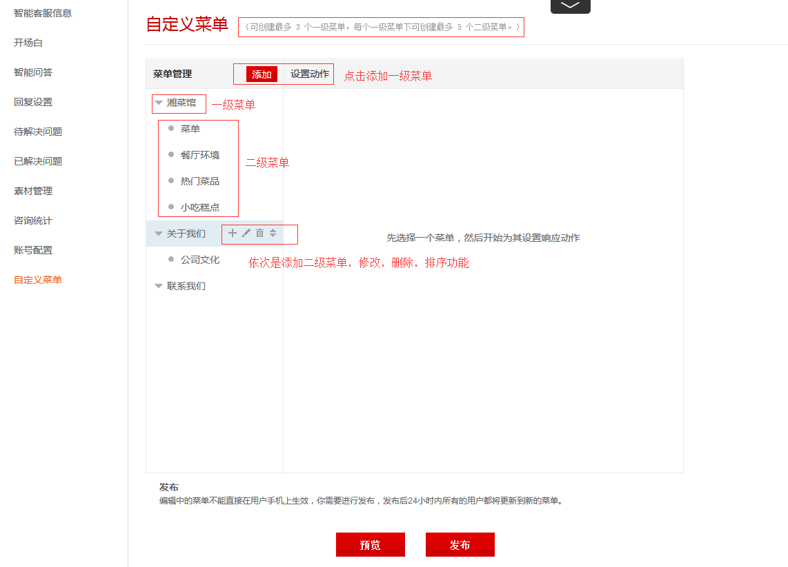
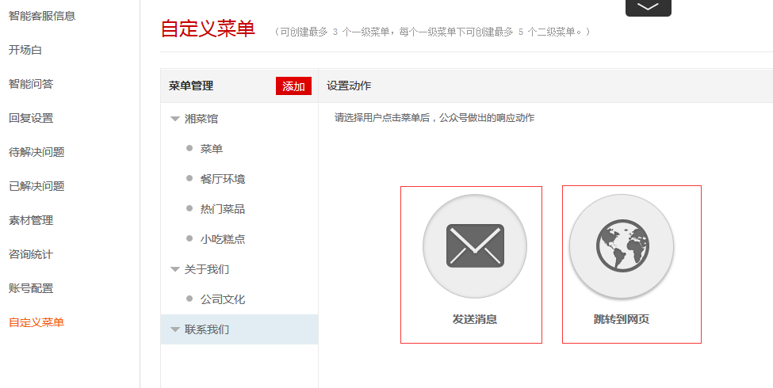
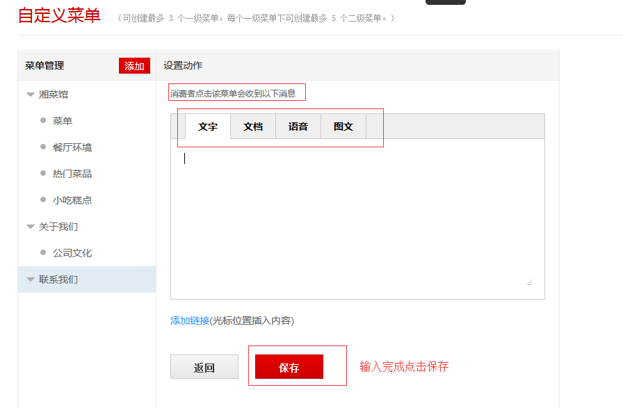
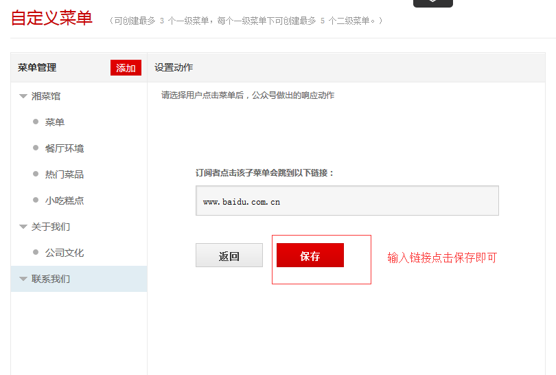
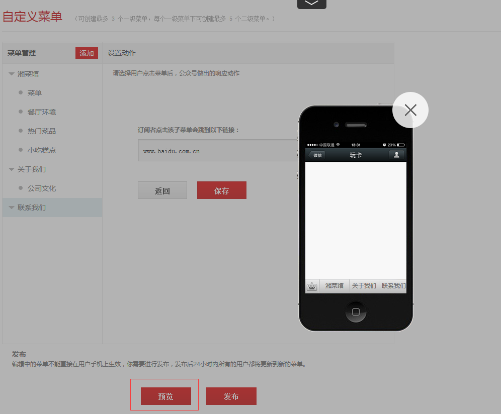
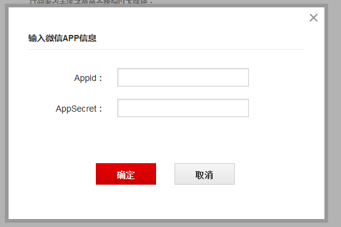
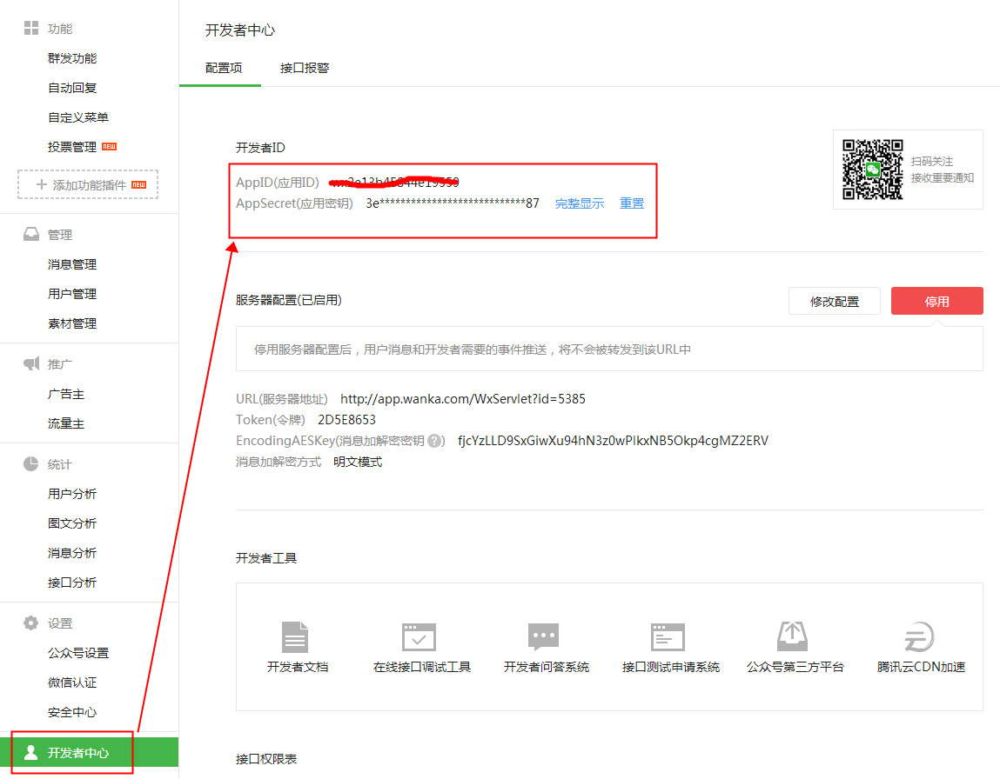

1、自定义菜单
点击【自定义菜单】，进入设置页面，自定义菜单可创建最多 3 个一级菜单，每个一级菜单下可创建最多 5 个二级菜单。如下图示：

2、设置菜单动作
选中菜单后，可为此菜单设置内容，内容分为两种形式：发送消息、跳转至网页，如下图所示：

发送消息
点击【发送消息】，可设置文字、文档、语音、图文四种消息内容，添加方式参考开场白的文字添加和图文添加。设置完成后点“保存”即可。用户点击该菜单就能收到您设置的消息，如下图所示：

跳转到网页
点击【跳转到网页】，可在输入框输入您想添加的链接，用户点击该菜单就能跳转到该网页，如下图所示：

3、预览或发布
所有自定义菜单设置完成后，可点击"预览"或直接"发布"。
预览
点击预览按钮，会生成自定义菜单的预览效果图，如下图所示：

发布
注：只有自定义菜单发生变动，才需点击"发布"完成更新，内容未发生变动，无需点击"发布"。发布后的菜单不能即时在用户手机上生效，所有用户将会在发布后24小时内更新到新的菜单。点击【发布】按钮，系统会要求您提供 ”开发者ID Appid“及”AppSecret“，如下图所示：

你可以打开微信公众平台登录公众号，在"开发者中心"找到开发者ID Appid及AppSecret9（如下图所示：），添加到上图中点击确定即可发布成功。24小时内将更新完成。
